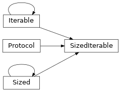

fifteen.data
Package Contents
Classes
Multiprocessed data loader, targeted at datasets that are too large to fit into |
|
Simple data loader for in-memory datasets, stored as arrays within a PyTree |
|
Protocol for dataloaders, which are used to generate minibatches that can be |
|
Protocol for defining PyTorch-style "map" datasets, which implement two methods: |
|
Protocol for objects that define both |
Functions
Maps iterables over PyTrees to an identical iterable, but with a prefetching |
|
|
Maps iterables over PyTrees to iterables over sharded PyTrees, which are |
- class fifteen.data.DataLoader[source]
Bases:
Generic[PyTreeType],fifteen.data.DataLoaderProtocol[PyTreeType]
Multiprocessed data loader, targeted at datasets that are too large to fit into memory. Similar to PyTorch’s data loader, but stateless.
Expects an arbitrary indexable dataset, which should implement
__getitem__()and__len__(), and map integer indices to items as arrays or PyTrees.minibatches()can then be used to construct an (optionally shuffled) iterable over minibatches of stacked items.- dataset :fifteen.data.MapDatasetProtocol[PyTreeType]
- minibatch_size :int
- num_workers :int = 0
Set to 0 to disable multiprocessing.
- drop_last :bool = True
Drop last minibatch if dataset is not evenly divisible.
It’s usually nice to have minibatches that are the same size: it decreases the amount of time (and memory) spent on JIT compilation in JAX and reduces concern of noisy gradients from very small batch sizes.
- collate_fn :CollateFunction
Collate function. By default, we simply stack along
axis=0.
- workers_state :Optional[_WorkersState]
- minibatches(self, shuffle_seed: Optional[int]) fifteen.data.SizedIterable[PyTreeType][source]
Returns an iterable over minibatches for our dataset. Optionally shuffled using a random seed.
- class fifteen.data.InMemoryDataLoader[source]
Bases:
Generic[PyTreeType],fifteen.data.DataLoaderProtocol[PyTreeType]
Simple data loader for in-memory datasets, stored as arrays within a PyTree structure.
The first axis of every array should correspond to the total sample count; each sample will therefore be indexable via
jax.tree_map(lambda x: x[i, ...], dataset).minibatches()can then be used to construct an (optionally shuffled) sequence of minibatches.- dataset :PyTreeType
- minibatch_size :int
- drop_last :bool = True
Drop last minibatch if dataset is not evenly divisible.
It’s usually nice to have minibatches that are the same size: it decreases the amount of time (and memory) spent on JIT compilation in JAX and reduces concern of noisy gradients from very small batch sizes.
- sample_count :int
- fifteen.data.prefetching_map(inputs: fifteen.data.SizedIterable[PyTreeType], device: Optional[jax.lib.xla_client.Device] = None, buffer_size: int = 2) fifteen.data.SizedIterable[PyTreeType][source]
- fifteen.data.prefetching_map(inputs: Iterable[PyTreeType], device: Optional[jax.lib.xla_client.Device] = None, buffer_size: int = 2) Iterable[PyTreeType]
Maps iterables over PyTrees to an identical iterable, but with a prefetching buffer under the hood. Adapted from
flax.jax_utils.prefetch_to_device().This can improve parallelization for GPUs, particularly when memory is re-allocated before freeing is finished. When the buffer size is set to 2, we make it explicit that two sets of data should live in GPU memory at once: for a standard training loop, this is typically both the “current” minibatch and the “next” one.
If a device is specified, we commit arrays (via
jax.device_put()) before pushing them onto the buffer. This should generally be set if the input iterable yields arrays that are still living on the CPU.For multi-device use cases, we can combine this function with
fifteen.data.sharding_map().
- class fifteen.data.DataLoaderProtocol[source]
Bases:
Protocol[ContainedType]Protocol for dataloaders, which are used to generate minibatches that can be iterated over.
- minibatch_size :int
- drop_last :bool
- minibatches(self, shuffle_seed: Optional[int]) SizedIterable[ContainedType][source]
- class fifteen.data.MapDatasetProtocol[source]
Bases:
Protocol[ContainedType]Protocol for defining PyTorch-style “map” datasets, which implement two methods:
__getitem__()for loading single samples and__len__()for counting the total number of samples.This is similar to collections.abc.Mapping, but does not require implementations of
__contains__().
- class fifteen.data.SizedIterable[source]
Bases:
Iterable[ContainedType],Sized,Protocol[ContainedType]Protocol for objects that define both
__iter__()and__len__()methods.This is particularly useful for managing minibatches, which can be iterated over but only in order due to multiprocessing/prefetching optimizations, and for which length evaluation is useful for tools like
tqdm.
- fifteen.data.sharding_map(inputs: fifteen.data.SizedIterable[PyTreeType], devices: Sequence[jax.lib.xla_client.Device]) fifteen.data.SizedIterable[PyTreeType][source]
- fifteen.data.sharding_map(inputs: Iterable[PyTreeType], devices: Sequence[jax.lib.xla_client.Device]) Iterable[PyTreeType]
Maps iterables over PyTrees to iterables over sharded PyTrees, which are distributed on multiple devices.
Takes as input leaf shapes
(N, ...), and maps as output to an iterable with leaf shapes(device_count, N // device_count, ...), where the leading axis corresponds to the index of the device that each shard is committed to.